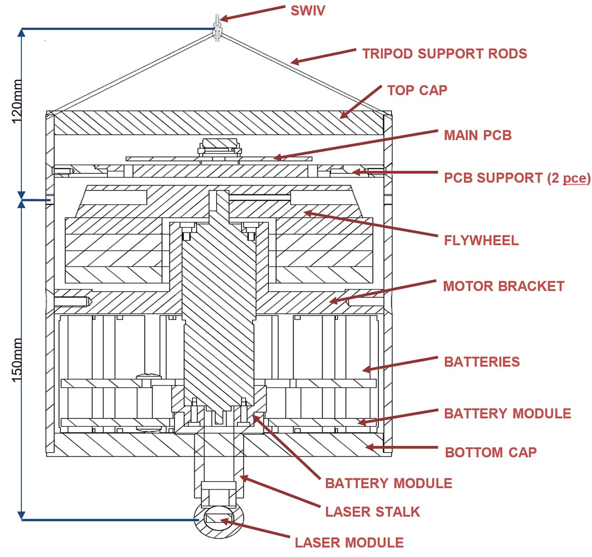
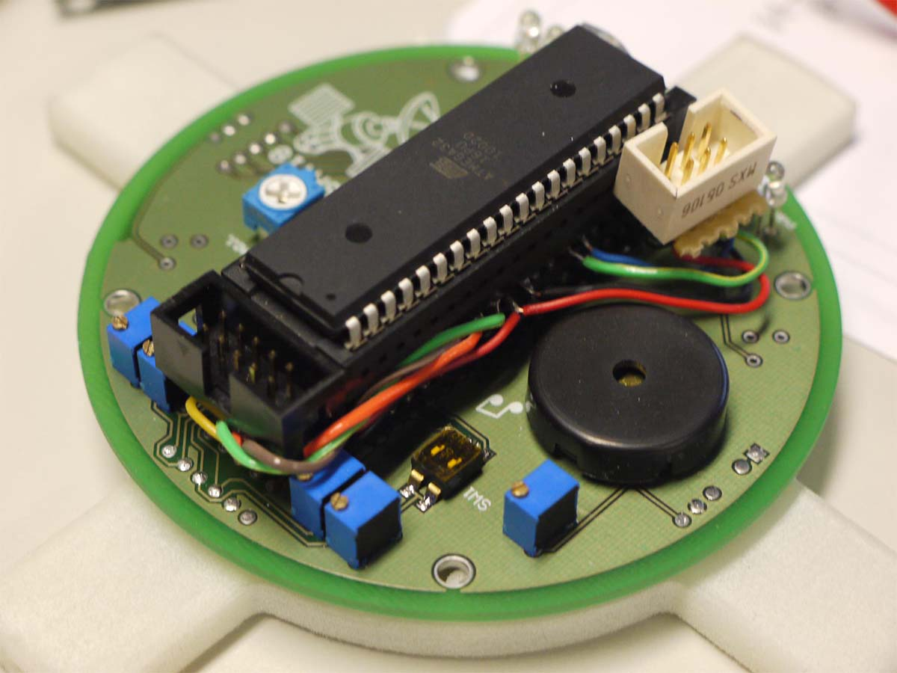
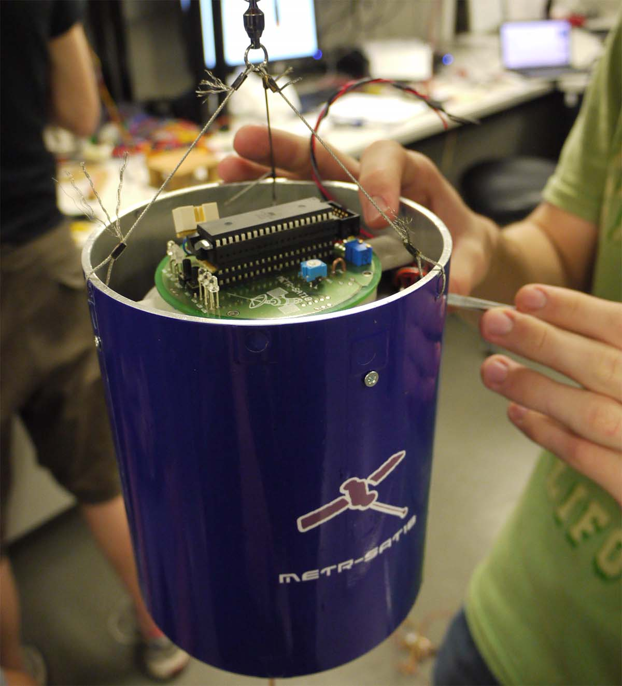
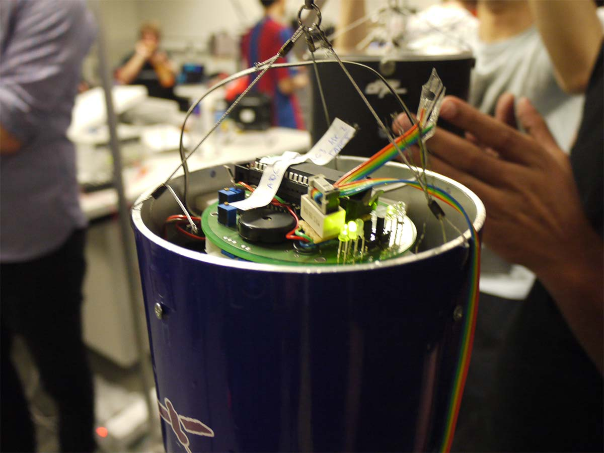
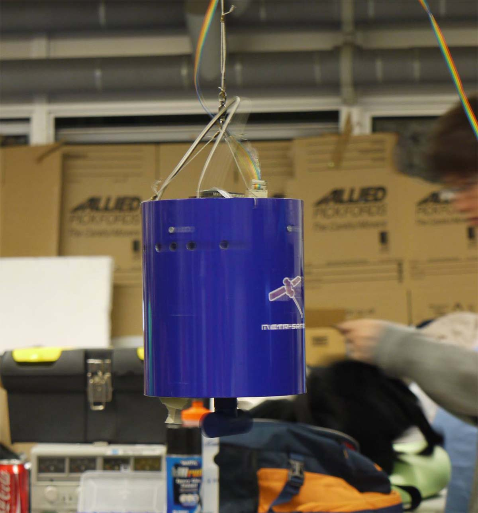

A laser shooting satellite
Doesn't get much better than this
This was my first proper team project. Myself, Jeevan, Kiaran and David, tasked to built a device which, whilst suspended from a single thin wire, would be able to detected infrared sources, target them, and then fire a laser back at them to hit a bullseye underneath.
In other words, an awesome project.
Like all good satellites, you try and keep mechanical design simple. Less moving parts means less points of failure. Our meager budget backed this up. Moving parts are expensive. Our design was simple - given we were suspended and had to rotate only on one axis, we'd simply throw a reaction wheel in the middle of the chassis. By dispersing a series of IR photodiodes over a relatively narrow field of view, we could combine voltage readings with sensor angular position to determine the angular displacement of the target. This information would be fed into the motor control, which was a simple PID controller. Sounds simple, right?
But the devil is in the details. Luckily, our schematic gave us the mechanical parts we needed without hassle.
However, the first circuit board we ordered was missing the entire ground plane. That is not a good thing to have missing. Express shipping and a New Zealand based fabrication plant later, and we had a circuit that worked. And it's beautiful.
Given the narrow spaces, assembly was slow.
And thus the first half of the project came together. The second half - the firmware control, was my baby. I spent weeks on it, tuning the PID parameters, adjusting the control code so that it was optimised for zero net spin (don't want to spin the wire if the swivel jammed), minimising the time to target, accounting for the friction jerk in the reaction wheel when it stopped, I honed it to perfection. The image below shows my debug wire hooked into the suspended satellite. Not shown is me with a PuTTY terminal open behind the camera.
At one point, we tested our satellite against project standards. We blew them out of the water. We were so relieved, everything was perfect. Look at it fly around!
And then we made a horrible mistake. You see, I had been testing the satellite for a while, and it has to be boxed up for a week before it gets demoed. We were worried about battery drain, and our satellite just not working, so the last thing we did was replace the batteries, and then ship it.
One issue. Battery voltages changes over lifetime. The PID values tuned for the old, lower voltage, were completely wrong for the fresh batteries.
So, on demo day, instead of the satellite smoothing acquiring new targets, it appeared to go into a seizure when locking onto a target. The batteries were supplying too much juice to the motors, and they were oscillating rapidly around the target. Given the bullseye score comes from the further ring you hit, not the closest, this played havoc with our performance. To be clear, we still did well (we only lost first place by a single point), but, after seeing it work so well, it was still disappointing. Moral of the story, always test something after swapping out a component.
Our lack of forsight notwithstanding, this was still by far the most interesting physical project I've had to do.